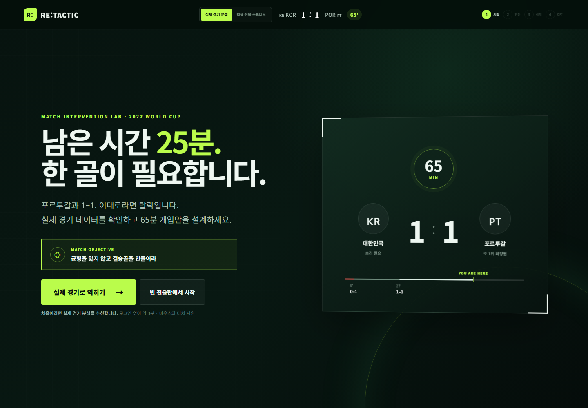
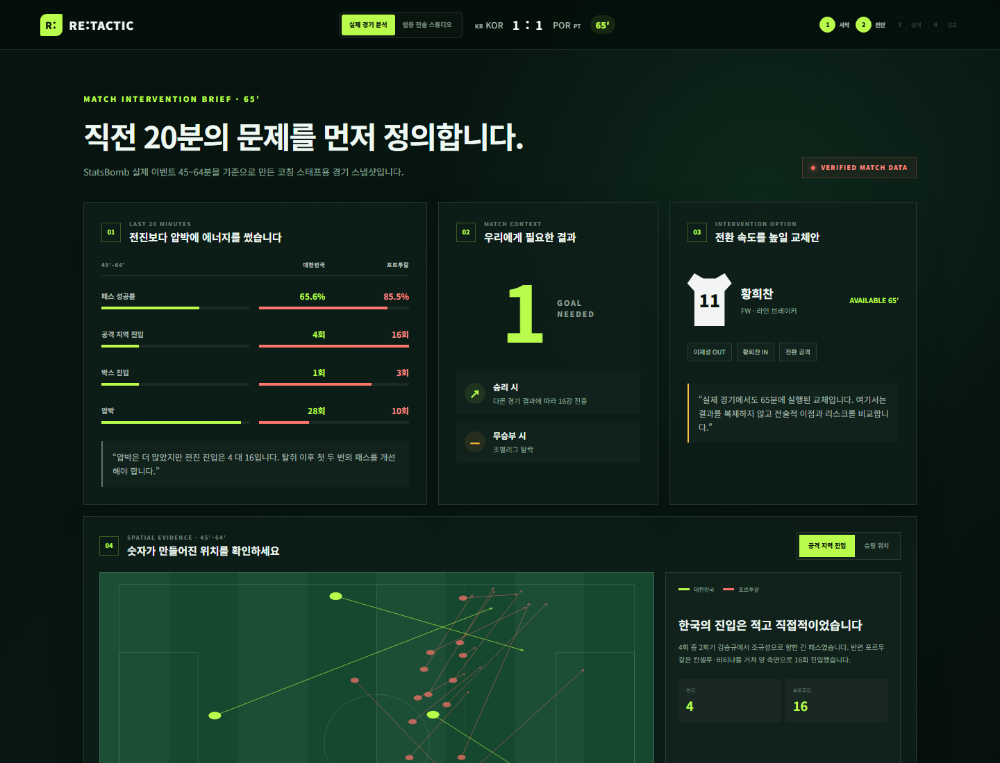
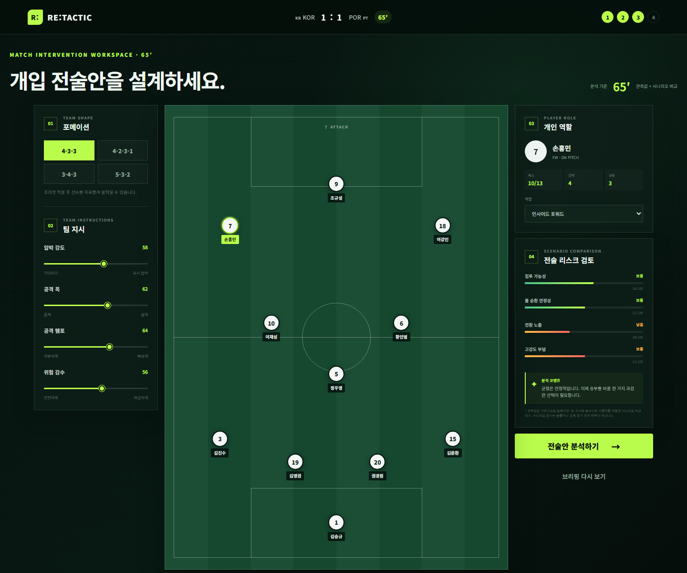
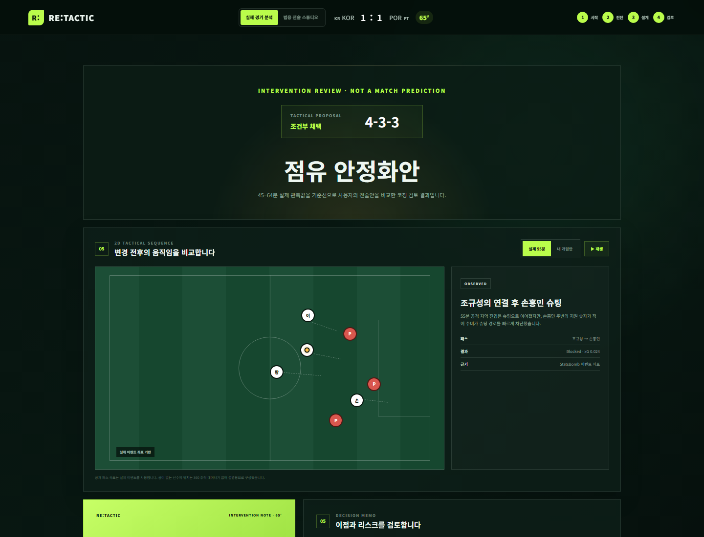
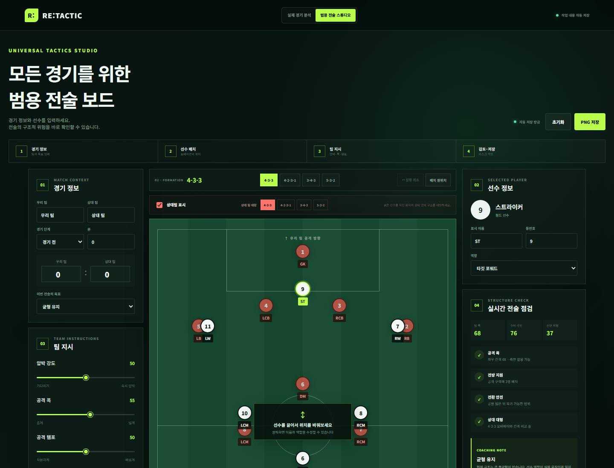

2026 월간 해커톤 · 내가 축구 감독이라면
월드컵 이벤트 데이터로 문제를 진단하고, 포메이션·역할·교체를 직접 조정해 이점과 리스크를 비교하는 코칭 의사결정 웹서비스
01 · SERVICE OVERVIEW
기존 전술판은 생각을 그리는 데서 끝나고, 축구 게임은 결과의 근거를 알기 어렵습니다. RE:TACTIC은 실제 관측 데이터와 사용자의 전술 선택을 연결합니다.
선수를 배치한 뒤 무엇이 나아졌는지 알기 어렵고, 전문 분석 도구는 첫 사용 장벽이 높습니다.
상황 진단 → 전술 설계 → 움직임 비교 → 개입 메모의 짧은 코칭 루프를 제공합니다.
초보자는 실제 경기로 조작법을 익히고, 코치는 범용 보드에서 자신의 경기안을 만듭니다.
02 · MANAGER EXPERIENCE

첫 방문자는 강조된 ‘실제 경기로 익히기’를 선택하고, 숙련 사용자는 빈 전술판으로 바로 이동합니다.
03 · DATA BRIEFING

2022 대한민국–포르투갈
45분 이상 65분 미만
한국 4회·포르투갈 16회 공격 지역 진입의 시작·도착 좌표
“한국의 진입은 적고 직접적”이라는 코칭 문장으로 전술 과제 연결
04 · CORE INTERACTIONS

설정을 바꾸는 즉시 공격 위협·중원 장악·전환 노출·고강도 부담 비교값이 갱신됩니다. 비교값은 승률이나 실제 경기 예측이 아닙니다.
05 · INTERVENTION REVIEW

55분 조규성→손흥민 패스와 차단된 슈팅은 StatsBomb 이벤트 좌표로 재현합니다.
사용자가 만든 개입안은 설명용 오프볼 위치와 휴리스틱 비교임을 명시합니다.
06 · UNIVERSAL STUDIO

상대 포메이션 오버레이와 붉은 선수 드래그로 압박 구조를 만듭니다.
두 전술안을 저장·복원하고 팀 폭·수비 라인·전환 위험 차이를 봅니다.
브라우저 자동 저장, 실행 취소, 16:9 PNG, 인쇄 PDF를 제공합니다.
07 · DATA & TRUST
패스·진입·슈팅·xG·압박과 실제 이벤트 좌표
포메이션·위치·역할·교체·팀 지시
같은 입력에 같은 결과를 내는 설명 가능한 휴리스틱
| 항목 | 방식 | 오해 방지 |
|---|---|---|
| 데이터 | StatsBomb Open Data · match 3857262 | 서비스·README·기획서에 출처와 로고 표시 |
| 재현 | 원본 이벤트에서 45–64분 집계 스크립트 제공 | 원본을 저장소에 복제하지 않고 파생값만 번들 |
| 시나리오 | 관측값을 기준선으로 선택 가중치 적용 | 승률·득점 확률·실제 결과 예측으로 표현하지 않음 |
| 런타임 | 정적 데이터와 브라우저 내 계산 | 외부 API 키·회원가입·유료 결제 불필요 |
08 · DIFFERENTIATION & DELIVERY
실제 경기의 결정적 순간을 데이터로 진단하고, 직접 만든 개입안의 운영 위험까지 검토합니다.
브리핑·전술판·터치라인 개입·결과 메모를 3분의 몰입 흐름으로 연결합니다.
드래그·교체·실시간 진단·A/B·자동 저장·PNG가 외부 키 없이 실제 작동합니다.
모든 데이터와 인터랙션을 ‘전술 선택의 근거와 결과’라는 한 축으로 통일했습니다.
| 구분 | RE:TACTIC의 선택 |
|---|---|
| 일반 전술판 | 배치 이후 구조 진단과 A/B 의사결정까지 연결 |
| 축구 게임 | 흥미 위주의 점수 대신 관측 근거·이점·리스크를 설명 |
| 전문 분석 도구 | 첫 행동을 추천하고 모든 차트에 코치의 한 문장을 제공 |
React + TypeScript + Vite · Pointer Events · localStorage · html-to-image · GitHub Pages